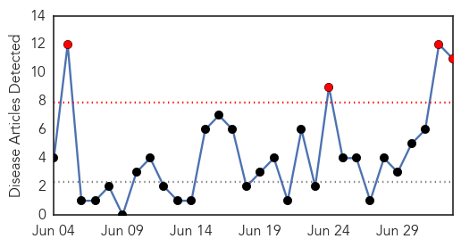
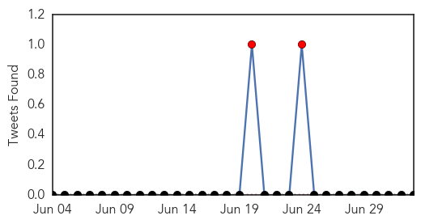
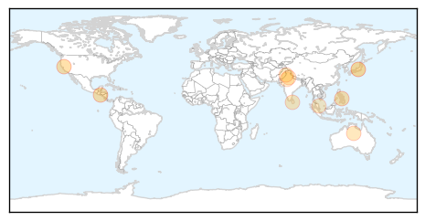
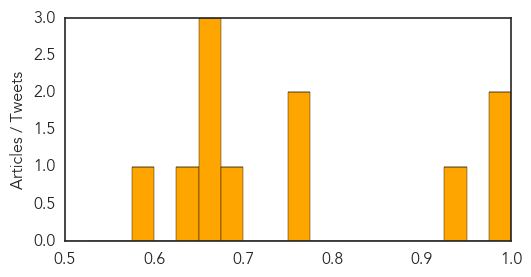

Dengue Fever
30-Day Web Trend
4 alerts, 0 warnings

30-Day Twitter Trend
2 alerts, 0 warnings

Article Locations
Article Confidences
Top Articles:
- 0.998
- Health officials fear disease in surge of illegal immigrants
- 0.990
- Dengue cases in Valley decreasing
- 0.946
- Cebu News, The Freeman Sections, The Freeman
- 0.772
- Dengue prevention programme to begin in Sri Lanka today
- 0.767
- Torres spraying mission to tackle disease-spreading mosquitoes
- 0.681
- Consumers avoid pork after Penang JE cases
- 0.669
- Dengue,Need for proactive monitoring with fix accountability
- 0.665
- Departments ordered to control dengue
- 0.664
- Consumers Avoid Pork After Penang JE Cases
- 0.626
- Results of JE blood samples to be known tomorrow
- 0.595
- No fogging machines in mosquito season
Top Tweets:
-
No tweets found for Jul 03, 2014
West Nile Virus
30-Day Web Trend
5 alerts, 2 warnings

30-Day Twitter Trend
0 alerts, 0 warnings

Article Locations

Article Confidences

Top Articles:
Top Tweets:
-
No tweets found for Jul 03, 2014